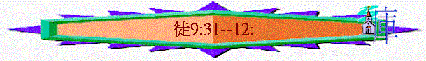

|
作主見證的經過 |
||||
|
緒論 |
預備 |
開始－在耶路撒冷作見證 |
擴張－在撒瑪利亞－猶大作見證 |
延伸－至地極作見證 |
|
1 |
２－７ |
８－１２ |
１３－２８ |
|
三）擴張 － 在撒瑪利亞和猶大作見證（８－１２）
４） 有大能的見證 － 彼得（擴張至呂大、沙崙、約帕猶大等地）（９：３１-４３）
ａ）最難起來的以尼雅 － 立刻起來
ｂ）最絕望的大比大 － 復活過來
５） 有傳統的改變 －猶太弟兄（延伸至外邦人）（１０－ １１：１８）
ａ）異象的看見
ｂ）聖靈的指引
ｃ）事件的引證
ｄ）主話的想起
ｅ）個人的放低
６） 有耶穌的同在 － 居比路、古利奈門徒（擴張至安提阿）（１１：１９－ ２１）
７） 有美好的工人 － 巴拿巴 （興旺於安提阿）（１１：２２－ ３０）
８） 插段：君王的逼迫 － 耶路撒冷聖徒（１２）
ａ）逼迫
i）雅各被殺
ii）彼得被拉
ｂ）結果
i）門徒 － 切切的禱告
ii）彼得 － 安然的渡過
iii）天使 － 意外的拯救
iv）希律 － 遭神的報應
v）神道 － 日見的興旺